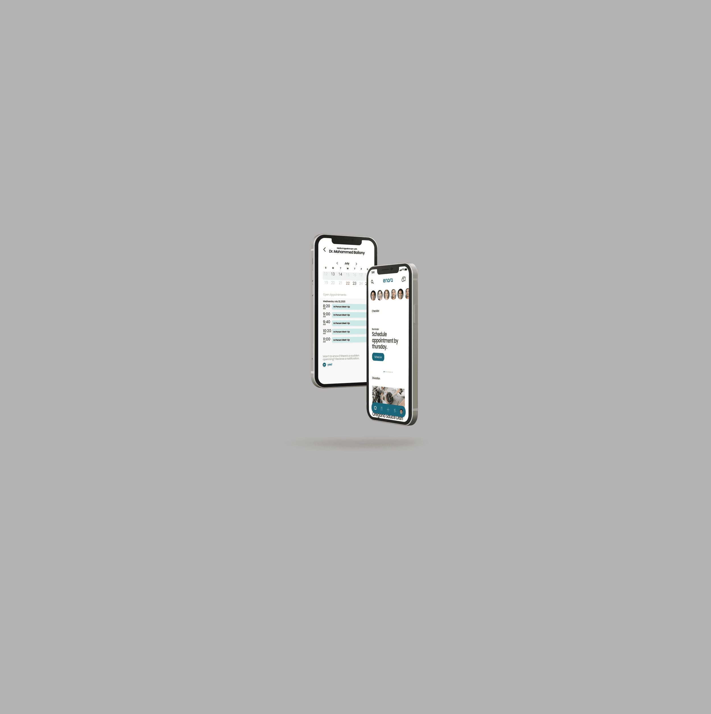
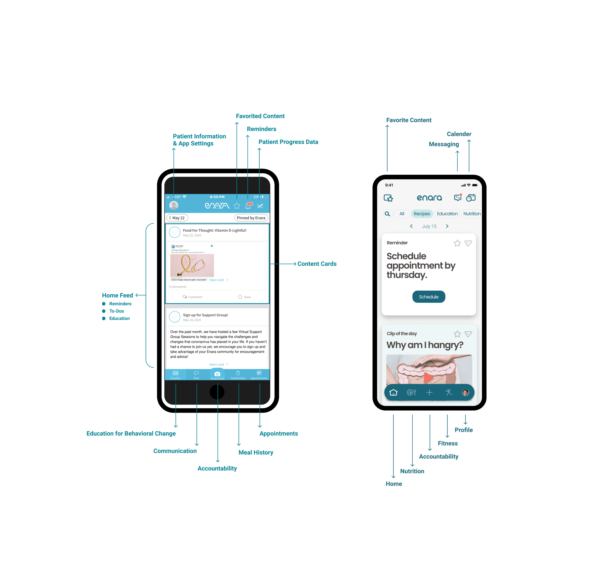

Enara App
I was hired by Enara Health in San Mateo, California, to enhance the user experience for both patients and healthcare providers. I led user research by conducting interviews with patients and providers, which informed my later ideation and development process for Enara Health’s medical app. The app serves as a central tool in the telehealth journey for patients, facilitating daily interactions with providers to support their dietary goals. With multiple logging features and smart device integrations, the app aims to simplify the process of building healthy habits and accessing medical support. Scroll down for a detailed look into my design process.
00

Sector
Behavioral Management. Tele-Health Service.
Company
www.EnaraHealth.com
Context
Enara Health provides a personalized tele-health service by connecting patients to health professionals who care for patients every step of the way on their path to developing healthier habits. The service is made possible by a robust app that connects patients to health professionals, provides them with smart at-home health devices, and monitors their health behaviors.
Problem
Enara Heath is always in search of identifying Patient and Provider pain points. Patients who join Enara Health receive support from a team of experts who help them build healthy habits through nutrition, exercise, and medical counseling, while tracking metrics and monitoring daily progress. This multifaceted, highly interactive program involves daily interactions between patients and providers. By improving the efficiency of daily interactions through the app, Enara Health boosts patient motivation, reduces dropout rates, and minimizes wasted time for medical providers, allowing them to offer more focused care.
Enara Health relies on a telehealth app to link patients to their daily health metrics, health education, medical experts, smarts health devices and daily logging of dietary choices and health metrics. Through the app, users can instantly chat with medical experts and book appointments.
Below is a preview of the before and after off the Enara app. The design changes were based on User Research and User Testing with the goal of keeping patients interested and eliminating annoyances that greatly reduce patient satisfaction. The app is faster and feels simpler but is more capable than before.
